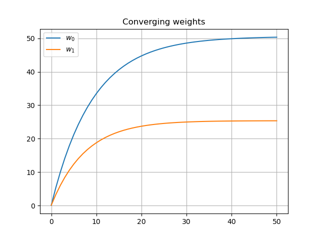
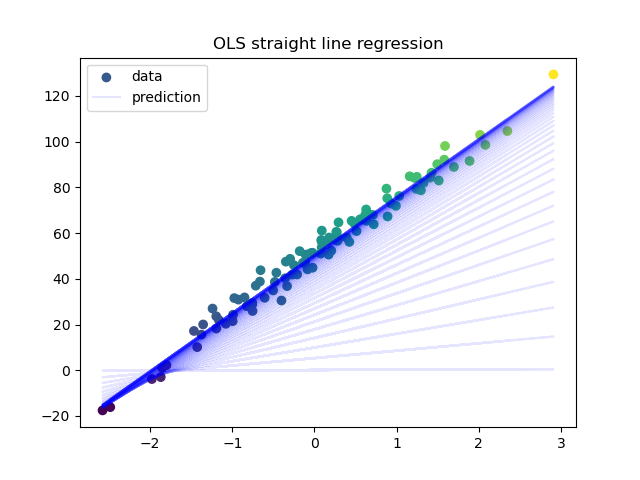
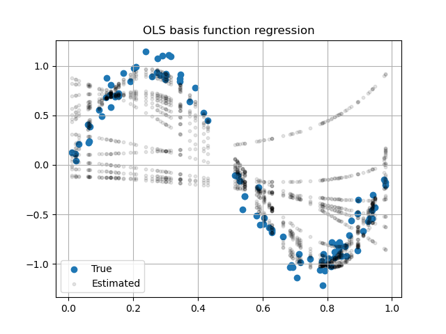

Linear Regression From Scratch
Don't just tow the line, move it!
Imagine you are buying a car and you want to know about its mileage. You don’t want to go for the user reviews or the company’s claim of mileage. The option you are left with is to predict the mileage all by yourself. So, if you are an interested data scientist, why not give it a try?
This is where linear regression comes in to help you. All you have to do is collect the necessary data and fit your model to it!
Are you looking to buy a house and overwhelmed to see the house prices? You obviously don’t want to ask the seller about the rise in prices as he might misguide you. If the curiosity to know kills you, then you might search for house prices over a period of years and observe the trend. An even better way would be to take the year,area and other attributes as predictors and price as the response variable, and fit a regression model.
What is linear regression?
From the above examples, we have attributes of the car such as horsepower, weight and a ‘variable of interest’ such as mileage as the response variable. Similarly, we have attributes such as house area, house facilities and house price as the ‘variable of interest’.
The attributes are called predictors and the ‘variable of interest’ is called the response variable.
Linear regression has two parts:
- building/training the model with the available data (both predictors and response variable), and
- using the model to predict the response variable given arbitrary predictors – usually those the model hasn’t seen.
Linear regression is not limited to modelling a linear relationship between the predictors and the response variable. Basis function regression allows us to model non-linear relationship between predictors and a response variable. Polynomial regression is a kind of basis function regression. However, this regression is still ‘linear’ because it is a weighted linear combination of features, some of them arrived via basis functions.
Here, we just look at modelling a linear relationship between the predictors and response variables using OLS (Ordinary Least Squares) and Gradient Descent.
How does a linear regression work?
A linear regression model can be represented thus:
$$ \hat{y} =\mathbf{xw} \tag{1} $$
where \(\hat{y}\) is the predicted response variable, \(\mathbf{x}\) is the predictors matrix (observations in rows and features in columns) and \(\mathbf{w}\) is the column vector of weights learned while building the model.
The process of learning weights
The process can be summarized as follows:
- define an error function
- compute a candidate prediction using random starting weights
- iteratively reduce the error by recomputing the weights using gradient descent
Our error/loss function is
$$ E(\mathbf{w}) = \frac{1}{2m} \sum_{i=1}^{m} (\mathbf{x}_{i}\mathbf{w}-y_{i})^2 \tag{2} $$
where, \(\mathbf{x}_{i}\) is the row vector for the \(i^{th}\) observation and \(\mathbf{w}\) is the weights column vector. \(y_i\) is the response variable for the \(i^{th}\) observation. We choose a quadratic function because it has a unique global minimum which can be arrived at by gradient descent.
The gradient of the loss function with respect to the weights is used to compute the small increments/updates to the weight vector.
$$ \Delta{\mathbf{w}} = -\alpha\nabla{E(\mathbf{w})} \tag{3} $$
The constant \(\alpha\) is called the learning rate and it is chosen small enough so that the gradient descent doesn’t cross over the minima. Since the gradient is defined as the direction of steepest ascent, the negative sign signifies the steepest gradient descent.
Deriving the gradient descent expression, we can write the update to individual weights as follows:
$$ \Delta{w_j} = -\alpha \sum_{i=1}^{m} (\mathbf{x}_{i}\mathbf{w}-y_{i})x_{ij} \tag{4} $$
and
$$ w_j = w_j + \Delta{w_j} \tag{5} $$
Here, \(w_j\) is the \(j^{th}\) weight and \(x_{ij}\) is the \(j^{th}\)feature in the \(i^{th}\) row/observation. To compute the update to the \(j^{th}\) weight, we sum up error attributable to this weight across all observations. This is called standard gradient descent.
For ease of implementation equation (4) can also be written in a vectorized form as:
$$ \Delta{w_j} = -\alpha \cdot sum((\mathbf{xw} - y) \circ \mathbf{x}_{*j}) \tag{6} $$
This is the sum of the hadamard product vector of residue for each row and the \(j^{th}\) column of the feature matrix (or the vector for the \(j^{th}\) feature).
However, standard gradient descent is computationally expensive for large datasets. An alternative method is stochastic gradient descent that updates weights after each observation. This method gives results which are arbitrarily close to standard gradient descent.
The Implementation
We code a function for gradient descent and use it to plot a straight line regression and later a non-linear relationship using basis function regression.
|
|
The first highlighted portion of the code is the core gradient descent implementation that follows equation (6).
 
To illustrate the convergence of weights and how the model evolves to fit the data, we have taken a regression with one variable. The figure on the left shows the convergence of weights and on the right on how the model evolves. You can note how the model (the regression line) sidles up to the data (denoted by the scatter plot) in the darkened portion of the plot. The evolution of the model corresponds to the convergence of the weights.
However, ‘linear’ regression is not limited to modelling linear relationships alone as we will presently see.

To show that linear regression can also model non-linear relationships, we generate data in the form of a noisy sine curve and fit a model to it.
For this, as shown in the second highlighted portion of the code, we generate polynomial features (our basis function) to feed our OLS model.
The plot on the right shows how the model (black dots) evolves to fit the data (blue dots) over the successive iterations.
It is very important to choose the correct combination of the number of iterations and the learning rate to get a converging model.
Making predictions
Given a feature vector or a table of test data, how would you predict your response
variable? The ols_gd() function returns a vector of weights including the bias
\(w_0\) given the training data X,y. You can train your model and make
predictions as follows:
model_weights = ols_gd(X_train, y_train)
y_hat = [model_weights[0]+numpy.dot(Xrow,model_weights[1:]) for Xrow in X_test]
Remember, if you are applying basis function regression (for modelling a non-
linear relationship), both your training and test data will need to go through
the basis function transformation. It is assumed that both X_train and X_test
above are basis-function-transormed if necessary.
We started out with trying to predict car mileage and house prices. If you have done your data gathering, you are ready to build your regression model. What’s more, you now understand how it works.